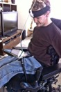

Mobile Concepts
Status: This is not ready for detailed review. It is an in-progress, unapproved editor’s draft.
If you’re used to developing in a desktop environment, or on a mobile environment without thinking much about accessibility, you’ve come to the right place to learn about making mobile devices accessible. First, some essential background.
What’s mobile?
Mobile devices are wireless and run apps including web browsers. They’re easy to carry and can be used in a wide variety of settings, including outside.
Mobile devices range from small handheld devices (e.g. feature phones, smartphones) to somewhat larger tablet devices.
The term also applies to wearables (e.g. smart-glasses, smart-watches and fitness bands). And it’s also relevant to small computing devices embedded into car dashboards, airplane seatbacks, digital TV, household appliances and the web/internet of things.
Many mobile devices often include platform-level settings that help users with disabilities interact with content. These include zoom, larger fonts, and captions.
How is mobile different than desktop?
Portability
The advent of smart phones with app functionality has made it possible to use computer apps anywhere. Mobile devices are small and therefore portable, convenient, and they’re also relatively cost-effective. Mobile devices can be used on the go and with one hand.
In contrast, desktop users are likely to sit in an office with a desk and a chair, laptop users might roam to different locations but likely use the computer on a surface, and tablet users most likely are using the device with two hands.
This ability to take a mobile device anywhere has surfaced environmental impacts of computing on-the-go. These include noisy environments such as a café or a crowd, environments where one hand is busy such as standing up on a subway car, environments where the user is distracted such as a busy street or meeting, and variable lighting, including direct sunlight.
Screen size
The size of a screen affects the tasks people will be able to do using it. This was very limiting for early mobile devices, but as designers have become better at accommodating small screens, and mobile screens of become a little bigger, it’s become more comfortable to use mobile devices for a wider range of tasks. At the same time, screen size is less of a distinction for users who are blind.
Input
The advent of touchscreen technology made it possible to interact with mobile devices without a physical keyboard, which has allowed them to be smaller and lighter.
Orientation options
It’s possible to change the orientation of many mobile devices just by turning them. Only some desktop screens swivel to change orientation. Changing orientation is often awkward on a laptop because turning the screen renders the keyboard useless. At the same time, some device users may have their mobile devices in a fixed orientation, e.g. attached to a wheelchair.
Customizability
The developing mobile market has fostered a rich environment of customization. Mobile devices have many sensors that can be changed to customize the mobile experience, e.g. camera, geolocation, telephone capabilities, actuators.
How is mobile the same as desktop?
Mobile devices started out as fairly distinct from desktop and laptop computers, but over time the categories have blurred. Today, there’s no absolute divide between desktop/laptop and mobile.
Merging input methods
After the advent of the mobile touchscreen, mobile users controlled devices using touch, and controlled the desktop using keyboard and mouse. But over time some laptops and desktop screens have gained touchscreen gesture control, while mobile devices can increasingly be connected to an external keyboard and mouse.
Early mobile devices didn’t include speech input for dictation or for control, while speech input for dictation and control has been an option on the desktop for decades. But many of today’s mobile devices allow the user to dictate and have pioneered intelligent agents that can be summoned by speech. Meanwhile, the intelligent agents have migrated to the desktop.
Merging development techniques
In the early days of mobile browsers there were different webpage versions for desktop versus mobile. But over time web pages have shifted to responsive design, which can transition into a mobile screen size even on a desktop.
The vast majority of user interface elements for desktops, such as hyperlinks, tables, buttons, pop-up menus, are equally applicable to mobile.
Also, although mobile and desktop operating systems are distinct, some laptops are using mobile operating systems.
Mobile is part of a continuum
So there’s really no such thing as developing for mobile-only or desktop-only. There’s a continuum from desktop to mobile into native applications. Mobile development spans web content, browser apps, native apps, and hybrid apps that range from web apps wrapped with native packaging to native apps that contain some HTML/CSS.
At the same time, the new capabilities of mobile devices are driving changes on the desktop, including the touch interface, intelligent agents, and better support for smaller windows.
Key aspects of mobile devices that affect accessibility:
- Touchscreen
- Small screen size
- The impacts of using the device in many different settings
- Sensors that allow applications to tap aspects such as device orientation and geolocation
- Pressure sensors that enable 3D touch and pressure-sensitive styluses
- Keyboard and speech input use as alternate input methods
This changing context is important for the whole field. This developers guide gives you what you need to know as these changes progress.
Why mobile is important
Mobile has become a central technology.
World-wide, Mobile phone users reached 4.77 billion in 2017, and pass the 5 billion mark by 2019 according to Statista.com. In 2014, nearly 60 percent of the population worldwide already owned a mobile phone (Source).
With such a large portion of the world’s population using smart phones, accessibility barriers on mobile have great impact on people with disabilities. Impacts include access to education, jobs, financial institutions and entertainment.
The following personas show how people with a variety of accessibility needs use mobile phones:
Joe
 Joe has hand tremors from Parkinsons.
Joe has hand tremors from Parkinsons.
- Touching small areas of the screen is difficult for Joe
- He often accidentally activates a control when controls are close together
Potential solutions:
Rebecca
 Rebecca uses an external keyboard with her Android tablet and the onscreen keyboard on her Android phone.
Rebecca uses an external keyboard with her Android tablet and the onscreen keyboard on her Android phone.
- Rebecca often uses touch, speech and keyboard to access content
- She prefers the standard onscreen keyboard to update based on the type of data that needs to be entered
Potential solution:
Mark
 Mark has light sensitivity and 20/200 vision.
Mark has light sensitivity and 20/200 vision.
- Mark has a hard time seeing the screen – especially outside where there is a lot of glare
- His device is set to large fonts and increased contrast
- He holds the device close to his face and uses the zoom function and text-to-speech
Potential solution:
Shawn
 Shawn uses a wheelchair and a head wand.
- Shawn’s iPad is bolted onto the side of his wheelchair in landscape orientation and he sets his device to remain in landscape orientation
Potential solution:
Joyce
 Joyce has repetitive strain injuries in her hands.
Joyce has repetitive strain injuries in her hands.
- Using the touch interface can be painful
- She uses the speech button on her smart phone to dictate texts and email and her smart phone’s intelligent agent to launch apps and search the web (e.g. “Launch Editorial”, “Search the web for green apples”)
Potential solutions:
Gabi
Gabi uses a screen reader with touch, and uses dictation and Siri to more quickly enter content and perform functions.
- Gabi prefers to access content on her iPhone so it’s important that her different means of input: touch, gestures and speech – work with the screen reader
- She faces challenges with inaccessible content similar to the desktop
Potential solution:
- Follow WCAG 2.0 for mobile
- Many WCAG techniques apply mobile
For more details on personas see stories of web users